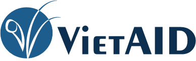
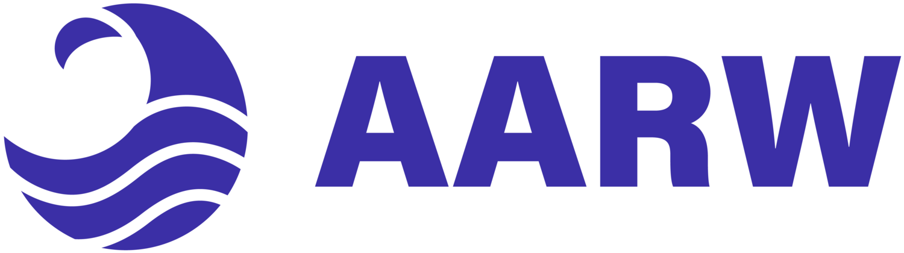
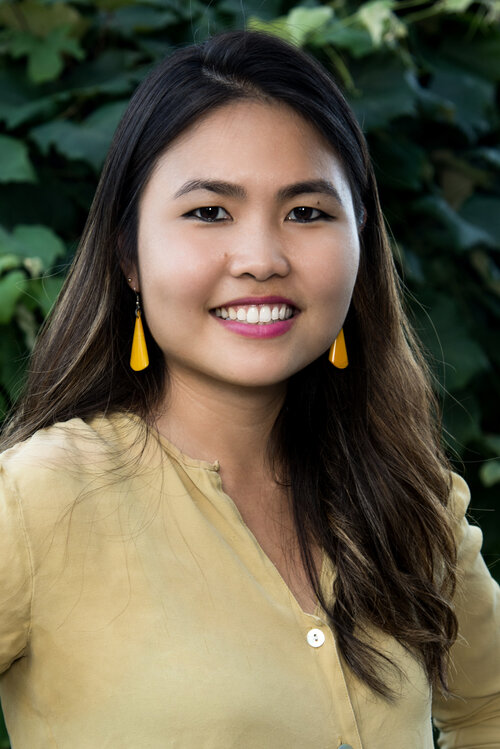

There are things that I have passion for whether it is to learn new things or be part of a community. Here are some few samples of things I am or have recently been involved with.
 VietAID has been a safe community shelters to the Dorchester community, which is deemed as "Little Saigon", serving over numerous resources to first generation Vietnamese family and close minority neighsbors nearby.
Visit VietAID here Asian American Resource Workshop, also known as AARW, is a political home for pan-Asian communities in Greater Boston. They have held workshops for youths to build leadership skills as well as help them grow their social justice knowledge.
AARW for you Through Ngoc-Tran Vu, I was able to be her project assistant and work on a massive mural with the community.
Ngoc-Tran Vu's site